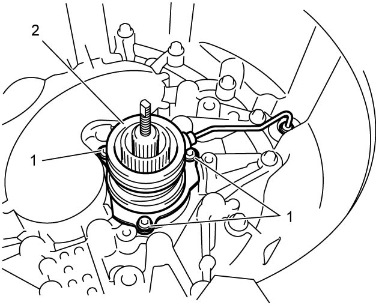
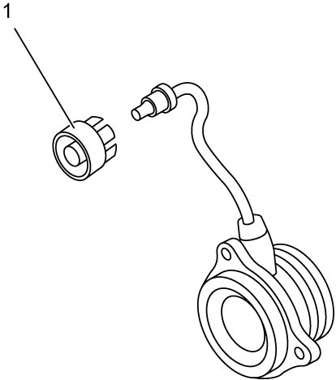
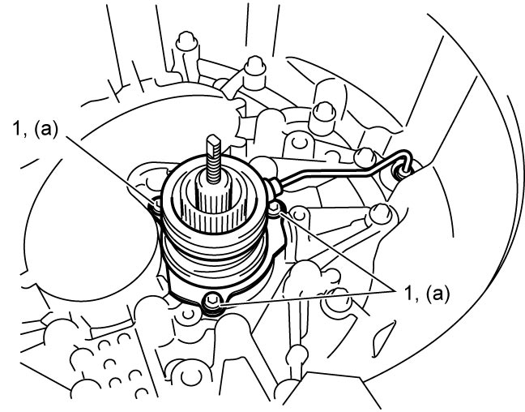

5F
| Even Gear Clutch Control Actuator Removal and Installation |
Removal
1)Remove even gear clutch assembly. 
2)Remove even gear clutch control actuator bolts (1) and remove even gear clutch control actuator (2).


 "Expand image")
3)Remove clutch pipe joint sleeve (1), if necessary.

 "Expand image")
Installation
Reverse removal procedure noting the following point.
•Tighten even gear clutch control actuator bolts (1) to specified torque.
•After replacing even gear clutch control actuator, perform TCM and Clutch Initialization.

 "Expand image")